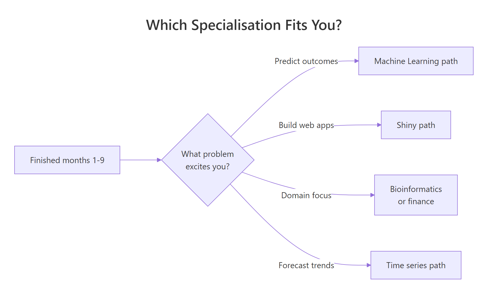
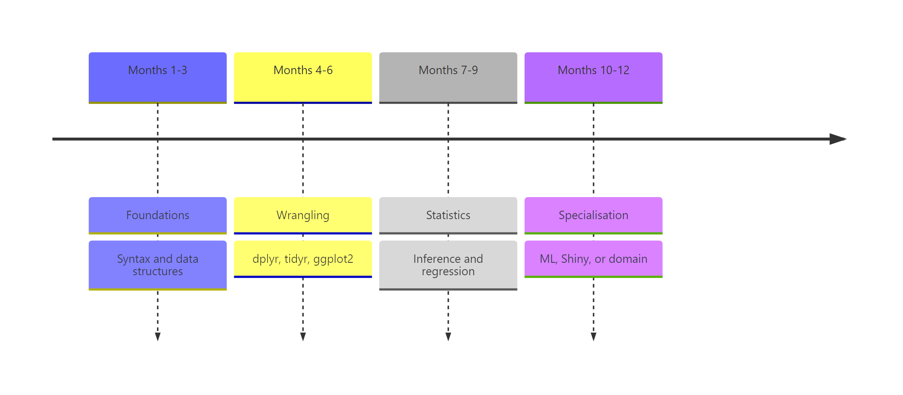

Learn R in 12 Months: A Week-by-Week Roadmap With No Wasted Time
Most people who try to learn R quit in the first month because they follow a plan that is either too vague ("just practice") or too ambitious ("become an expert in 30 days"). This 12-month roadmap gives you a specific weekly schedule, four milestone gates so you know when to move on, and an honest list of things you should skip.
What does the 12-month R roadmap look like at a glance?
Think of the next year as four three-month phases that stack on each other. Phase 1 teaches the language — syntax, objects, how R thinks. Phase 2 covers data wrangling and visualisation, which is where R stops being a toy and becomes genuinely useful. Phase 3 brings in statistics and modelling, the domain R was built for. Phase 4 is where you pick a specialisation — machine learning, Shiny, bioinformatics, or time series — and go deep. Before we dive in, here is a taste of what even raw R gives you with two lines of code.
Two lines, and you already have the full five-number summary plus the mean of a real dataset. By the end of month 2, you will read code like this as naturally as English. That compounding payoff is why R rewards a steady weekly rhythm rather than a heroic 30-day sprint.
Try it: Use summary() on the hp column of mtcars to inspect the horsepower distribution. Store the result in ex_hp_summary.
Click to reveal solution
Explanation: summary() dispatches on the object's type. Given a numeric vector it returns the five-number summary plus the mean.
Months 1-3: What should you learn in the foundations phase?
Phase 1 is about fluency with the language itself. The goal is simple — by the end of month 3 you should be able to open RStudio, load a CSV, poke at it with base R, and produce a short written summary of what you found. No tidyverse yet, no statistics, no plots fancier than plot(). Foundations first.
Weeks 1-2 cover installation, the RStudio interface, arithmetic, and assignment with <-. Weeks 3-4 introduce the core data structures — vectors, lists, and data frames — and how to index them. Weeks 5-8 add functions, if/for, and reading small CSV files with read.csv(). Weeks 9-12 are your first milestone project — pick a dataset that interests you and write a base-R exploration script, end to end.
Here is the kind of code a week-4 reader should be able to write without looking it up.
Three lines, three different patterns — an aggregate function, a summary statistic, and a logical filter used as an index. The last line is the most important idea in all of R: boolean vectors act as selectors. Once that clicks, everything else in the language becomes easier.
Try it: Create a vector ex_scores containing 85, 92, 78, 95, 88 and compute its mean, rounded to one decimal place.
Click to reveal solution
Explanation: c() concatenates values into a numeric vector. mean() averages them and round(x, 1) keeps one decimal place.
Months 4-6: How do you master data wrangling and visualisation?
Phase 2 is where R becomes your daily driver instead of a toy from a textbook. The tidyverse — especially dplyr, tidyr, and ggplot2 — turns clunky multi-step analyses into short, readable pipelines. If you skipped tidyverse here to "stay pure base-R", you would spend three times as long on every real project.
Weeks 13-16 focus on the five core dplyr verbs: filter(), select(), mutate(), summarise(), and group_by(). Weeks 17-20 add tidyr reshaping, joins, and string and date handling. Weeks 21-24 are the ggplot2 grammar — layers, aesthetics, facets — and your second milestone project is a one-page exploratory-data-analysis report on a dataset you did not choose yourself.
Let us see the same mtcars question from earlier, but answered the tidyverse way.
The pipe reads left-to-right like a sentence — "take mtcars, group by cylinder, then summarise mean mpg and count." Four-cylinder cars average 26.7 mpg, eight-cylinders just 15.1. That is the kind of answer you can extract in fifteen seconds once the pipeline is second nature.
Visualising the same relationship is a one-liner with ggplot2.
Every ggplot2 plot has three ingredients — a data frame, an aes() mapping, and one or more geom_* layers. Once you internalise that pattern, every new chart type is just swapping the geom.
|> first. The magrittr pipe %>% has extra tricks but the native pipe covers 95 percent of daily use and ships with base R, so your code runs anywhere without loading magrittr.Try it: Use dplyr to count how many mtcars rows have mpg > 25. Assign the count to ex_efficient_count.
Click to reveal solution
Explanation: filter() keeps rows matching the condition; nrow() counts them. You could also use summarise(n = n()) for the same answer.
Months 7-9: Which statistics and modelling topics matter most?
Phase 3 is the most skipped phase in every other roadmap and the one that matters most for long-term pay-off. R was built by statisticians, and the thing that sets it apart from Python is not speed — it is a 20,000-package ecosystem of statistical methods that "just work".
Weeks 25-28 cover descriptive statistics, common distributions, and the classic hypothesis tests — t-tests, chi-squared, ANOVA basics. Weeks 29-32 introduce linear regression with lm(), diagnostic plots, and the broom package for tidying model output. Weeks 33-36 add generalised linear models — logistic regression for classification — and your third milestone project is a short regression report with a real research question.
The first regression model you will ever fit looks like this.
Each row is one predictor. The Estimate column says every extra 1000 lbs of weight costs about 3.2 mpg, holding cylinders constant. Both p-values are tiny, so the effects are not noise. This is the core loop of applied statistics in R — specify a formula, fit, interpret, check assumptions.
Try it: Fit a simple linear regression of mpg on hp alone using mtcars. Save the model to ex_fit and check the coefficient of hp.
Click to reveal solution
Explanation: A formula y ~ x in lm() fits y = b0 + b1 * x. The hp slope says every extra horsepower costs about 0.068 mpg on average.
Months 10-12: How do you pick a specialisation?
Phase 4 is where the roadmap forks. By now you speak R fluently, so the question shifts from "what do I learn next" to "which problem do I want to solve?" Pick one track, go deep for eight weeks, and spend the final four weeks of the year on a capstone portfolio project that you can show employers or collaborators.

Figure 2: A simple decision flow for picking a specialisation in months 10-12.
The four most common tracks are machine learning with tidymodels, interactive apps with shiny, time-series forecasting with fable, and a domain specialisation like bioinformatics or quantitative finance. There is no "best" track — the best one is the one that matches a problem you already find interesting.
Here is a taste of the machine-learning track — a logistic model predicting whether a car has a manual transmission.
A positive mpg coefficient and a strongly negative wt coefficient match intuition — lighter, more efficient cars in the mtcars sample tend to be manuals. That is a two-line classifier you can extend with cross-validation and ROC curves as you go deeper.
Try it: Fit a logistic model of am on mpg alone and store it in ex_glm.
Click to reveal solution
Explanation: family = binomial tells glm() to fit a logistic regression. A positive slope on mpg means more fuel-efficient cars in this sample are more likely to be manuals.
How do you know you're ready to move to the next phase?
Each phase ends with a concrete self-assessment gate. If you can complete the gate test from memory, you are ready. If not, spend another week or two consolidating before moving on — weak foundations compound into a permanent feeling of "I know R but cannot actually write anything."
The four gates are:
- End of month 3 — read a CSV, filter rows with base R, compute a mean, write the result to a file.
- End of month 6 — take a raw dataset, clean it with dplyr and tidyr, and make three publication-quality ggplot2 charts with captions.
- End of month 9 — pose a research question, fit and diagnose a regression, and write a one-page interpretation.
- End of month 12 — ship a portfolio project in your chosen specialisation that someone else could reproduce from your code.
Here is what a month-6 gate test looks like as a single runnable snippet.
If you can look at that pipeline and narrate what it does without running it, you have passed the wrangling gate.
Try it: Take the gate_result pipeline above and modify it to filter on mpg > 15 instead of 20, assigning the new result to ex_gate.
Click to reveal solution
Explanation: Lowering the mpg threshold lets six- and eight-cylinder cars into the result, giving three rows instead of two.
What common mistakes waste beginners' time?
Five mistakes explain almost every "I have been learning R for a year and still feel lost" email I get. Recognise them early and the 12 months above become genuinely productive instead of quietly frustrating.
- Tutorial hopping. Starting six courses and finishing none. Pick one resource per phase and finish it before switching.
- Learning every package at once. You do not need
data.table,sf,tidymodels, andshinyin month one. One package per phase is plenty. - Avoiding statistics. Phase 3 feels harder than Phase 2, so people rush past it. Then they cannot interpret a p-value under pressure.
- Copying code without reading output. If you paste a block and the console prints something you do not understand, stop and read it.
- Starting Shiny before dplyr feels easy. Building interactive apps on top of wobbly data-wrangling skills is the fastest way to quit.
The cheapest bug to fix is the one about reading output. Look at this classic trap.
The first call returns NA, not an error — which is exactly why it is dangerous. R tells you the result is undefined because one value is missing, and expects you to tell it what to do. Forgetting na.rm = TRUE silently zeroes out reports every day in production codebases.
sum(is.na(x)) is your cheapest sanity check.Try it: Compute the mean of c(10, NA, 20, 30, NA, 40) while ignoring the missing values. Save it to ex_mean.
Click to reveal solution
Explanation: na.rm = TRUE drops missing values before averaging. Without it, any NA in the vector propagates and you get NA back.
Practice Exercises
These two capstones combine skills from across the roadmap. They are harder than the inline drills — expect to spend 15-30 minutes each, not 30 seconds.
Exercise 1: Mini EDA pipeline on airquality
Using the built-in airquality dataset, write a single dplyr pipeline that filters out rows where Ozone is missing, groups by Month, and returns each month's mean Ozone and row count. Assign the result to my_eda and sort by descending mean Ozone.
Click to reveal solution
Explanation: !is.na(Ozone) drops missing observations before grouping. July and August run hottest, which matches real ozone data — hot months generate more ground-level ozone.
Exercise 2: Two-predictor regression report
Fit a linear model of mpg on wt and hp using mtcars. Save it to my_model, extract the coefficient of determination (R-squared) into my_r2, and round it to three decimals.
Click to reveal solution
Explanation: With both wt and hp in the model, R-squared is 0.827 — the two predictors jointly explain about 83 percent of the variance in fuel economy, up from 0.753 for wt alone. That jump is why multiple regression is worth learning.
Putting It All Together
Here is a month-9 worked example — the full loop you should be able to run on a new dataset without a tutorial by the end of Phase 3. Load, summarise, fit, interpret.
The grouped summary already hints at the answer — setosa's petals average 1.46 cm while virginica's average 5.55 cm, with almost no overlap in the standard deviations. The logistic model confirms it: a huge negative slope on Petal.Length means longer petals push the probability of "is setosa" towards zero very sharply. That end-to-end loop — summarise, model, interpret — is the core rhythm of applied R.
Summary

Figure 1: The 12-month roadmap split into four three-month phases with milestone gates.
| Phase | Months | Skills | Milestone project |
|---|---|---|---|
| 1. Foundations | 1-3 | Syntax, vectors, data frames, base-R exploration | Base-R analysis of a dataset you chose |
| 2. Wrangling & viz | 4-6 | dplyr, tidyr, ggplot2 | One-page EDA report |
| 3. Stats & modelling | 7-9 | Hypothesis tests, lm(), glm(), broom | Regression write-up with interpretation |
| 4. Specialisation | 10-12 | ML, Shiny, time series, or domain | Capstone portfolio project |
The three rules underneath the table are simple — one resource per phase, one milestone project per phase, and no skipping gates. Twelve months of that rhythm beats any crash course.
References
- Wickham, H. & Grolemund, G. — R for Data Science, 2nd edition. Link
- Wickham, H. — Advanced R, 2nd edition. CRC Press. Link
- R Core Team — An Introduction to R (CRAN manual). Link
- Posit — R & tidyverse cheatsheets. Link
- Tidyverse project — package documentation. Link
- James, Witten, Hastie & Tibshirani — An Introduction to Statistical Learning. Link
- R-bloggers — aggregated R tutorials and articles. Link
- Stack Overflow — the
[r]tag. Link
Continue Learning
- R Data Types — the first thing to master in Phase 1.
- dplyr filter and select — the opening lesson of Phase 2.
- ggplot2 tutorial with R — the core grammar for the visualisation weeks.